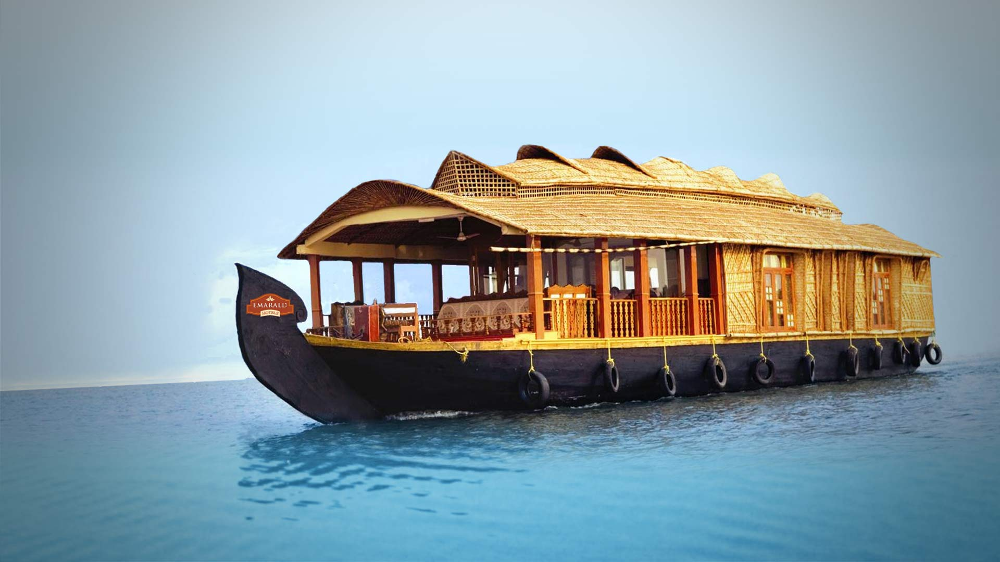
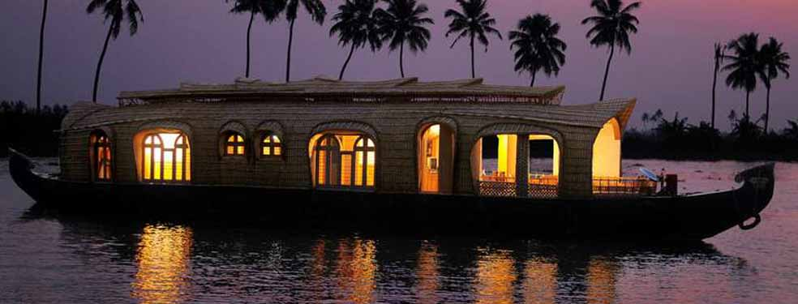

Tripster Company Blog
ALLEPEY
Introduction

Don't mistake this for a simple small town! Alleppey or Alappuzha might be untouched by time, but it has a surprising amount of history that would make your holiday here worthwhile. It all starts with the famed Kuttanad region, better known as the Rice Bowl because of the profusely cultivated rice plantations. Unique temples and churches dot the entire region, each with a tale of its own. But Alleppey’s attraction, by far remains the inviting backwaters. Take a leisurely cruise along the Punnamada Lake, while weaving your way through old bungalows, swaying palms and rice fields. And as serene as this may appear to you, these backwaters show a contrast during the Snake Boat races. Watch skilled oarsmen man their way through the winding waters expertly! There is much to do here and the more you look, the more you discover.
Know Your Place

Local Languages: : Malayalam & English
Best Time to Visit: August-September & February-March
Clothing: Light cottons during summer and light woollens are sufficient for winters.
Moving around: Travel around in the public transport system, which includes government and private run buses, taxis and
auto-rickshaws. Semi-luxury coaches and tourist taxis with or without a chauffeur can be hired. Tourist taxis are available
throughout the state. Another great way to explore Alleppey is by private boats that can be rented for short or long trips.
They are located across the North Canal, opposite the boat jetty. Regular government boats as well as luxury boats can be
got from the tourism department as well as private operators.
Climate -
Summer: March-late June, Hot & humid Temperature: 27.9°C-35.2°C
Monsoon: June-September, Moderate rainfall Annual rainfall - 230 cm
Winter: October-March, Cool & pleasant Temperature: 21.3°C-28.4°C
Places to Visit

Krishnapuram Palace: This 18th century palace is a typical double-storeyed Kerala building showcasing gabled roofs, dormer windows and narrow corridors. There is a museum inside, which displays ancient sculptures, bronzes and paintings. The main attraction here is the Gajendra Moksham mural, measuring some 14 feet by 11 feet (making it the largest in the region)!
Alleppey Beach: This is one of the most popular picnic spots here complete with entertainment facilities for children and
families. The pier extending into the sea is believed to be 137 years old. The northern side has a sea-view park with boating
facilities and an old lighthouse is another attraction the beach has to offer.
Backwater Cruise: This constitutes a must-do in Alleppey. Don't miss out on a backwater cruise through the vast network of the
Punnamada Lake, which takes you through the scenic views of paddy fields, Chinese fishing nets and old-world bungalows. There
are houseboats fitted with all amenities that even let you stay here for a night or two. This lake is the site for the famous
Snake Boat Race held in August.
Ambalappuzha Sree Krishna Temple: Located 14 km south of Alleppey, this temple is built in typical Kerala style. Its highlight
is the daily palpayasam offered to the Lord. Paintings of Dasavatharam or ten incarnations of Vishnu adorn the walls.
Pathiramanal Island: A popular haunt of several migratory birds, this Island literally means Sand of Midnight. Accessible only
by boat, the journey is truly scenic as the Vembanad Lake, stretching from Alleppey to Kochi and the Kayamkulam Lake, surrounds
it. The island is just the place to head out for a relaxing time and enjoy a backwater cruise.
Chettikulangara Bhagavathy Temple: This is one of the most sacred temples, known for its miraculous and wish-granting powers.
The annual Kettukazhcha festival is attended by a large number of devotees, who take part in processions, where bright effigies
of horses and bullocks are taken around.
Arthunkal: This is home to the St. Sebastian Church, which is an important Christian pilgrimage centre and the site of the annual
Arthunkal Perunnal Festival.
Mannarasala Sree Nagaraja Temple: A renowned temple, it is dedicated to the Serpent God Nagaraja. This is one of the only temples,
where all religious rites are performed by a Brahmin priestess. It is also believed that 30,000 images of snake-gods line the
entire path to the temple.
St. Mary's Church: Said to be one of the oldest churches in Kerala, it is believed to be one of the seven churches established by
St. Thomas. The annual feast of the church falls on the 3rd Sunday of October every year and the feast of St Thomas is celebrated
on March 19th.
Punnamada Kayal: Another most visited site in Alleppey, the annual Nehru Boat Festival is held here during August/September. Thousands
of spectators from across the country come to the backwaters to watch this spectacular event. The boats show includes a fascinating
display of huge snake-boats manned by over 100 rowers and competing against each other.
Kuttanad: Literally meaning the rice bowl of Kerala because of the profusion of green paddy fields, the scenic countryside of Kuttanad,
with its shimmering waterways also has a rich crop of bananas, cassava and yams. Inland waterways, which flow above land level are an
amazing feature of the unique landscape where farming is done below sea level.
Karumadikuttan: Associated with legends of Buddhism, Karumadikuttan is home to an ancient black granite statue of Lord Buddha in
a seated position. Believed to belong to the 11th century, this statue is located on the banks of the Punnamada Lake.
Post your Experience:
See Past Experiences